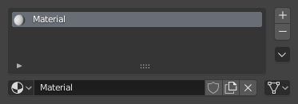

Lesson 9: Materials and color
What a material does
A material controls how a surface looks: its color, shininess, and how light passes through it. Each object can have a material. Materials show up in renders. Your Lesson 6 render will look different once you add them.

Image: Blender Manual by the Blender Documentation Team, licensed under CC BY-SA 4.0. Shared unchanged.
Steps
- Tool Open the stand file from Lesson 2. Click the base block to select it.
- In the Properties panel, click the Material tab. It is the sphere icon, last in the tab column. icon position unverified on 5.2.1
- Click New. A material named Material appears in the slot. unverified label on 5.2.1
- Mouse Double-click the name and type Base Green, then press Enter.
- Under Surface, click the color box next to Base Color. Pick a color in the window that opens. Surface panel and label unverified on 5.2.1
- Check The base block changes color in the 3D view.
- Key Click the body block, then repeat steps 2 to 5 with a new material and a different color. Do the same for the head block.
- Choose Render > Render Image again, the same way as Lesson 6. Save it as
stand-painted.png.
Why each block has its own material: in Lesson 2, the base, body, and head are three separate objects. Each object takes one material, so this is the easiest way to paint them now. Painting different parts of a single object is a later lesson.
Project: painted block stand
Your Lesson 2 block stand with three colors. Save the render as stand-painted.png and compare it with stand-render.png from Lesson 6.